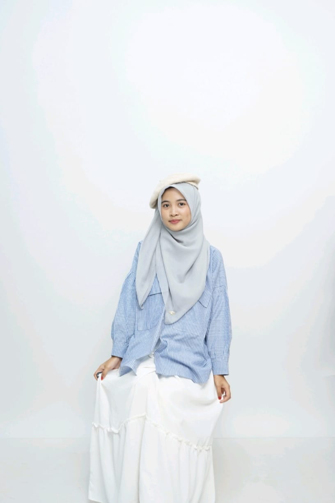

Di sini, kamu bisa menemukan portofolio, pengalaman, karya, tulisan, catatan belajar, serta berbagai cerita dari perjalanan yang sedang aku jalani. Aku juga berbagi tips belajar, pengalaman mengembangkan diri, dan hal-hal kecil yang semoga bisa menjadi inspirasi untuk kamu yang sedang berproses mengejar mimpi.

Namaku Faidatul Mawaddah, tetapi kamu bisa memanggilku Faida.
Saat ini aku sedang menempuh perjalanan sebagai mahasiswa Pendidikan IPA. Aku adalah seseorang yang senang belajar, mencoba hal-hal baru, berkarya, dan mencari kesempatan untuk terus berkembang.
Bagiku, perjalanan menjadi mahasiswa bukan hanya tentang ruang kelas, tugas, dan nilai. Ada begitu banyak hal yang bisa dipelajari dari pengalaman, organisasi, proyek, kompetisi, mengajar, bertemu orang baru, hingga berbagai kesempatan yang terkadang datang tanpa diduga. Karena itu, aku mencoba untuk tidak hanya menjadi seseorang yang belajar, tetapi juga menciptakan, mencoba, berbagi, dan terus bertumbuh.
Selengkapnya tentang aku »Tentang kuliah, tips belajar, produktivitas, dan berbagai hal yang sedang kupelajari.
Tentang pendidikan, pengalaman mengajar, media pembelajaran, dan perjalanan menjadi calon pendidik.
Dokumentasi tulisan, desain, media, proyek, penelitian, dan berbagai karya yang pernah kubuat.
Tentang pengalaman, organisasi, kompetisi, tantangan, kegagalan, pencapaian, dan proses menjadi lebih baik.
Memulai kehidupan sebagai mahasiswa Pendidikan IPA dan belajar beradaptasi dengan dunia perkuliahan.
Mulai aktif dalam berbagai kegiatan, organisasi, proyek, dan kesempatan baru.
Mulai terlibat dalam berbagai proyek pendidikan, penelitian, kompetisi, dan kegiatan kreatif.
Mengajar, melakukan penelitian, mengikuti berbagai kegiatan, mengembangkan karya, dan terus mencari kesempatan untuk berkembang.
Dan perjalanan ini masih panjang...
Masih banyak hal yang ingin kupelajari. Masih banyak karya yang ingin kubuat. Masih banyak mimpi yang ingin kuwujudkan.
Media pembelajaran untuk membantu siswa memahami konsep IPA dengan cara yang lebih menarik.
Lihat Karya »Pengembangan instrumen untuk mengukur tingkat pemahaman siswa pada materi sains terpadu.
Lihat Karya »Pembuatan tata letak dan desain visual untuk modul pembelajaran sains sekolah menengah.
Lihat Karya »Tulisan tentang belajar, pendidikan, pengalaman, dan proses bertumbuh.
Bagaimana aku mengatur waktu antara kuliah, organisasi, dan waktu istirahat tanpa merasa kewalahan.
Baca selengkapnya »Catatan kecil ketika merasa tertinggal dan bagaimana aku belajar untuk tetap berjalan meskipun ragu.
Baca selengkapnya »Pengalaman pertamaku mengajar dan hal-hal berharga yang kupelajari dari para siswa di kelas.
Baca selengkapnya »Untuk kamu yang sedang berjuang.
Untuk kamu yang sering membandingkan dirimu dengan orang lain.
Untuk kamu yang sebenarnya punya banyak mimpi, tetapi masih takut untuk memulainya.
Tidak apa-apa kalau langkahmu hari ini masih kecil.
Tidak apa-apa kalau kamu belum tahu semuanya.
Tidak apa-apa kalau sesekali kamu gagal dan harus memulai lagi.
Yang penting, jangan berhenti percaya bahwa kamu juga bisa sampai ke sana.
Mari belajar. Mari mencoba. Mari bertumbuh.
Mari mengejar mimpi kita, satu langkah demi satu langkah.
Buku Filosofi Teras dan beberapa literatur tentang psikologi pendidikan.
Pemrograman web dasar dan cara mengembangkan media belajar interaktif.
Proyek penelitian akhir dan menyusun perangkat pembelajaran IPA.
Target kelulusan dan persiapan untuk mengikuti kompetisi mahasiswa.
Versi diri yang lebih sabar, konsisten, dan bermanfaat bagi orang lain.